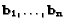
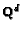
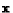

Next: About this document ...
Lattices
For vectors

in 
,
the set of integer linear combinations
is called the lattice spanned by the vectors
Computational problems in lattices
arise in
- computational algebra
- coding theory
- combinatorial optimization
- cryptology - security of several modern cryptosystems (including one
commercially deployed) assumes difficulty of finding approximately
optimal solutions to lattice problems.
Computational problems in lattices
- shortest vector problem:
- input: vectors
representing a lattice
- output: shortest nonzero vector in lattice generated
- closest vector problem:
- input: vector

,
and vectors
- output: vector in the lattice that is closest to
(recent paper by Klein in Symposium on Discrete Algorithms: ``Finding the closest lattice vector
when it's unusually close'')
Both problems are NP-hard. However,
there is strong evidence that approximate solution is
not NP-hard. Are there good approximation algorithms?
Philip Klein
2000-03-01